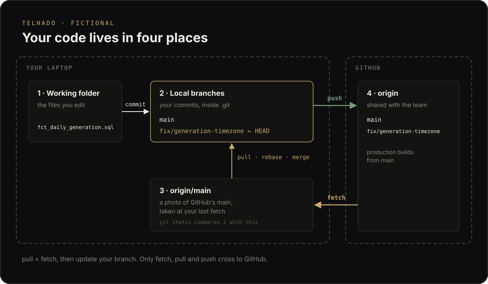
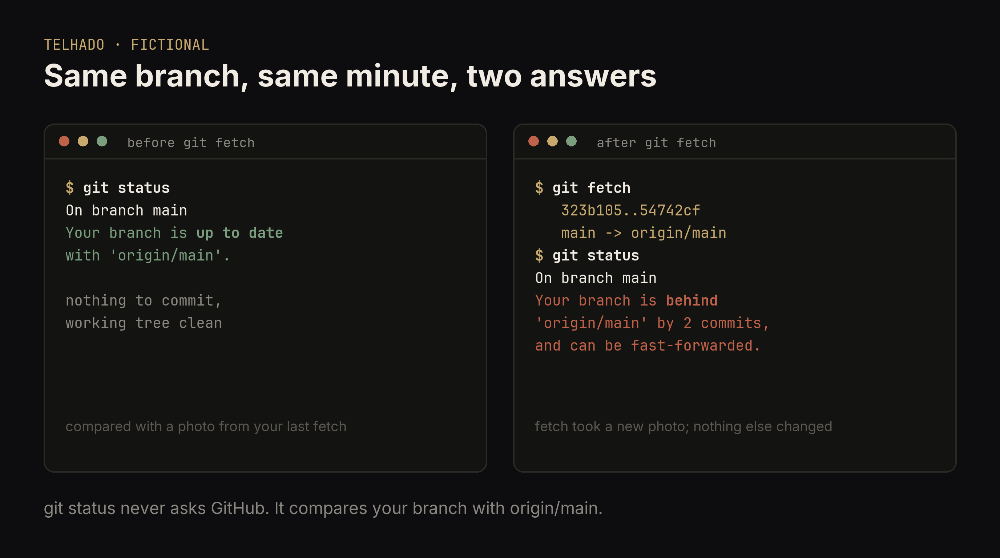
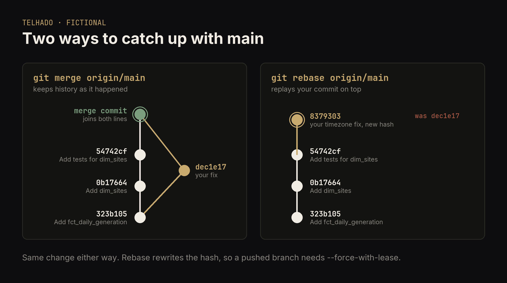
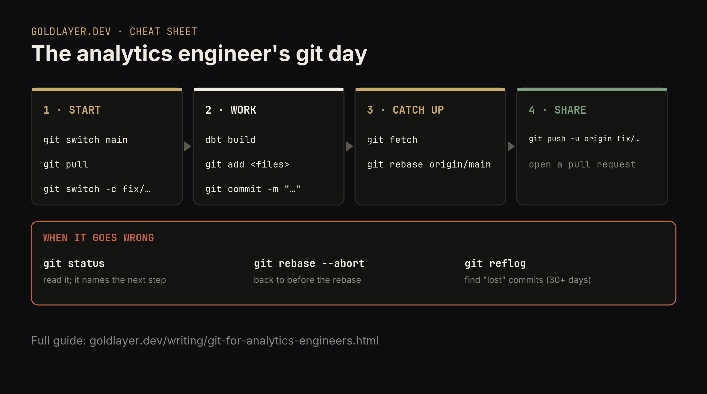

I keep seeing the same git setup on data teams: five commands copied from a wiki page in someone's first week, and a small prayer whenever one of them prints red text.
It holds up until the morning git status says your branch is up to date and your pull request still collides with work you have never seen. Both statements were true at the same time. Once you see why, most of git stops being scary.
git statusreports on a snapshot that can be days old.- Most git panic traces back to four words nobody explained.
- One picture and one real metric change cover a normal working day.
Telhado is fictional: a rooftop-solar co-op in Porto with a small dbt project. I ran every git command in this post on git 2.54 in a scratch repository, with two clones playing two teammates, including the rebase conflict and the squash merge. The outputs are copied from those runs.
Your code lives in four places
Picture a restaurant that keeps its recipes in one binder on the kitchen shelf. Every cook follows that binder. You take a full photocopy home, scribble changes on sticky notes, and bring them back for the head chef to approve. Before leaving the kitchen you snapped a photo of the shelf, so you know what the binder looked like.
The photo is the part everyone forgets. Git works the same way:

dec1e17).
master.
main was on origin the last time you talked to it. The photo of the shelf.
Here is the morning from the opening. My teammate Ana merged two commits into main on GitHub. On my laptop, nothing had talked to GitHub since. I asked git where I stood:
$ git status
On branch main
Your branch is up to date with 'origin/main'.
Up to date with the photo. Then I ran git fetch, which downloads new commits and moves origin/main, without touching my files or my branches:
$ git fetch
323b105..54742cf main -> origin/main
$ git status
On branch main
Your branch is behind 'origin/main' by 2 commits, and can be fast-forwarded.
git status compares you with a photo, not with GitHub. git fetch takes a new photo.

Branch or not to branch
Branch. In a team repository, every change starts on its own branch and reaches main through a pull request, even a one-line fix. main is what your production job builds from, so writing on it directly is writing in the shared binder in pen.
Branches are cheap enough that there's no reason to skip them. In my scratch repository a branch was a 41-byte file: one commit hash and a newline. Creating one copies nothing.
New branch or not?
My rule: a branch lives for days, not weeks. The longer it lives, the further main moves away from it, and every day adds to the conflict you resolve at the end. Name it after the change (fix/generation-timezone), not after yourself.
Fetch, pull, rebase: what each one changes
Back to Telhado. I'm on fix/generation-timezone with one commit that converts timestamps to Lisbon time. Meanwhile Ana's two commits (dim_sites and its tests) are now on main. My branch has fallen behind, and four commands could deal with that:
git fetch
Downloads new commits and moves origin/main
No
Any time. It's always safe
git pull
Fetch, then move your current branch to match its copy on GitHub
Yes
On main, before you start a branch
git rebase origin/main
Replays your commits on top of the latest main
Yes, on your branch
Your own branch is behind and nobody else commits to it
git merge origin/main
Joins both histories with a merge commit
Yes, on your branch
Others also commit to the branch, or your team prefers merges
The surprise is git pull. When I ran git pull origin main on my branch, git refused:
$ git pull origin main
hint: You have divergent branches and need to specify how to reconcile them.
fatal: Need to specify how to reconcile divergent branches.
That's git declining to guess. Ana's commits and mine both started from the same point, so there's no simple way to line them up, and current git defaults to fast-forward only: pull updates a branch only when it's behind and has nothing new of its own. On main, where you never commit directly, that is always the case. On a feature branch, pick rebase or merge yourself.
Rebase is peeling your sticky notes off the old binder and sticking them onto the newest edition. Merge staples the two editions together with a note saying they were combined. Both keep your work. Rebase leaves a straight line that is easier to read in review; merge keeps the history exactly as it happened.

Look at the hashes on the right. Rebase rewrote my commit: dec1e17 became 8379303. That matters the moment the branch is already on GitHub.
After rebasing a branch you already pushed, git push is rejected, and git's hint says to run git pull. Don't. With the default settings pull just fails again, and with merge configured it brings the old copies of your commits back, so every change appears twice. Use git push --force-with-lease: it overwrites your branch on GitHub only if nobody else pushed to it since your last fetch. Never rebase main or a branch a teammate is committing to.
A real change, command by command
Every analytics engineer has had this request. Telhado's operations lead writes on a Tuesday morning: capacity factor should divide by each site's installed capacity, not its peak output, and could the daily table show the inverter model too? That's one model, one metric and one new column. Here is the whole job in git, start to finish. Check your own routine against each step.
1. Start from a fresh main.
git switch main
git pull
You want Already up to date. or a fast-forward. If pull refuses with "divergent branches", your local main has commits that never went through review. Move them onto a branch with git switch -c <name>, then put main back with git switch main and git reset --hard origin/main. Run that reset only once the branch holds your commits.
2. One branch for the request.
git switch -c feat/capacity-factor-installed-kw
Both changes touch the same model and ship together, so they share a branch. If the same message also asks you to rename a dashboard field, that's a second branch.
3. Change the model, then build it with everything downstream.
dbt build --select fct_daily_generation+
The + builds and tests every model that depends on this one. A metric change rarely breaks the model you edited. It breaks the reporting model two steps downstream.
4. Read your own diff before git does anything with it.
git status
git diff
Only the files you meant to change should appear. If target/, logs/ or a profiles.yml show up, they belong in .gitignore, not in a commit.
5. Commit files by name, with a message about the data.
git add models/marts/fct_daily_generation.sql
git commit -m "Use installed capacity in capacity_factor"
git add . is how a stray CSV ends up in history forever. "fix" and "wip" tell a reviewer nothing; the message should say what changes in the numbers.
6. Push and open the pull request.
git push -u origin feat/capacity-factor-installed-kw
The -u links your branch to its copy on GitHub, so later a plain git push knows where to go. In the pull request, say how the numbers moved: which sites' capacity factor went up or down, and roughly by how much. Reviewers can read SQL. They can't guess what it does to last month's report.
7. Answer review on the same branch.
The reviewer asks you to document the new column:
git add models/marts/schema.yml
git commit -m "Document inverter_model"
git push
No new branch and no new pull request. The open one picks up the commit.
8. Catch up when main moves under you.
Meanwhile Ana merged a change that rounds capacity_factor to four decimals. It's the same line you changed.
git fetch
git rebase origin/main
In my run, the rebase stopped with CONFLICT (content): Merge conflict in models/marts/fct_daily_generation.sql, and the file held both versions:
<<<<<<< HEAD
, ROUND(kwh_generated / (peak_kw * 24), 4) AS capacity_factor
=======
, inverter_model
, kwh_generated / (installed_kw * 24) AS capacity_factor
>>>>>>> 3372d74 (Use installed capacity in capacity_factor)
During a rebase the top half, marked HEAD, is main's version and the bottom half is yours. Most people expect the opposite. Don't pick a side: keep both intents, Ana's rounding and your denominator, and delete the marker lines.
, inverter_model
, ROUND(kwh_generated / (installed_kw * 24), 4) AS capacity_factor
git add models/marts/fct_daily_generation.sql
git rebase --continue
dbt build --select fct_daily_generation+
git push --force-with-lease
Build again before pushing, because the combined line is new code nobody has run. If --continue opens an editor for the commit message, save and close it.
9. Clean up after the merge.
git switch main
git pull
git branch -d feat/capacity-factor-installed-kw
If your team squash-merges on GitHub, -d refuses with "not fully merged". A squash merge lands your work on main as one new commit, so git can't find your branch's commits inside main. Once the pull request shows Merged, git branch -D is safe.
When something goes sideways, three commands get you out of almost everything:
git statusfirst, every time. It names the state you're in and usually prints the next command.git rebase --abortwhen a rebase hits conflicts you don't want to resolve now. You land back where you started.git reflogwhen you think you lost work. It lists every place your branch has pointed, including commits that are no longer on any branch. Git keeps those entries for 30 days by default.
$ git reflog -3 fix/generation-timezone
2b9124e fix/generation-timezone@{0}: rebase (finish): ...
8379303 fix/generation-timezone@{1}: rebase (finish): ...
dec1e17 fix/generation-timezone@{2}: commit: Convert generation timestamps to Europe/Lisbon
Even after two rebases, the original dec1e17 is still there. git switch -c rescue dec1e17 would bring it back as a new branch.

Try this at work
Run the three lines below once. Older git versions merged silently on pull, and pull.ff only makes every machine behave like current git. fetch.prune removes origin/ branches that were deleted on GitHub after their pull requests merged. Then git tree draws the picture from this post for your own repository.
git config --global pull.ff only
git config --global fetch.prune true
git config --global alias.tree "log --oneline --graph --all"
Takeaways
- origin/main is a photo, not a live view —
git statuscompares you with your last fetch, so fetch before you trust it. - Only three everyday commands talk to GitHub — fetch and pull download, push uploads, and everything else is local.
- Branch for every change in a team repo — a branch is a pointer, costs nothing, and keeps
maindeployable. - Pull on main, rebase or merge on branches — current git refuses to guess when histories diverge, and that's a feature.
- Rebase rewrites hashes — after rebasing a pushed branch, use
--force-with-lease, never pull. - Resolve conflicts by keeping both intents — then rebuild with dbt, because the merged line is untested code.
- Almost nothing is truly lost —
git reflogremembers where your branch has been for at least 30 days.
Sources and version notes
Checked on 19 November 2026. I ran every command on git 2.54.0; the documentation below is current to git 2.56.1. Older git versions behave differently on git pull without configuration: they merged and printed a warning instead of stopping.
- git-fetch, git-pull and git-rebase — git reference manual, including
--ff-onlyas the pull default. - git-push — what
--force-with-leasechecks before overwriting. - git-config —
pull.ff,fetch.pruneandgc.reflogExpireUnreachable(30 days). - Branches in a Nutshell and Remote Branches — Pro Git.
- The default branch for newly-created repositories is now main — GitHub changelog, 1 October 2020.
Which git command did you copy for months before you knew what it did?